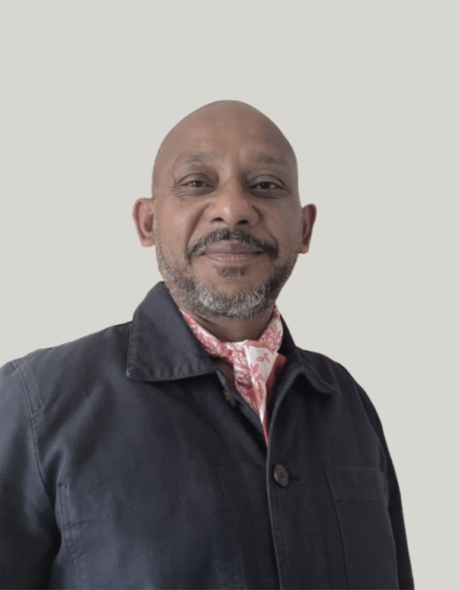

DAX RICAUD
Artiste.
Basé à Maurice
Dax Ricaud développe une pratique conceptuelle qui se construit à partir de recherches, de gestes, de protocoles et de situations.
Selon les nécessités de chaque œuvre, elle peut mobiliser le dessin, la peinture, la photographie, la vidéo ou des formes d'archive. Les médiums ne constituent pas des catégories fixes : ils deviennent des outils lorsque la recherche les rend nécessaires.
Formé à la prise de vue et au montage auprès d'un réalisateur institutionnel, il réactive l'image fixe ou en mouvement lorsque celle-ci peut attester une action, un temps, une absence ou une transformation.

LE REGISTRE
Donner un état aux formes qui ne suivent pas une ligne droite.
Le Registre des recherches ne suit pas un parcours d'idées devenues œuvres. Il accueille aussi les formes en cours, reprises, interrompues ou transformées.
Un état ne juge pas le travail. Il rend visible une manière d'exister, sans forcer une recherche à se terminer pour être reconnue.
CONTACT ET PRÉSENCES
Échanger autour d'une recherche.
Pour une exposition, une activation, une collaboration ou une conversation autour du travail.
dax@daxricaud.com